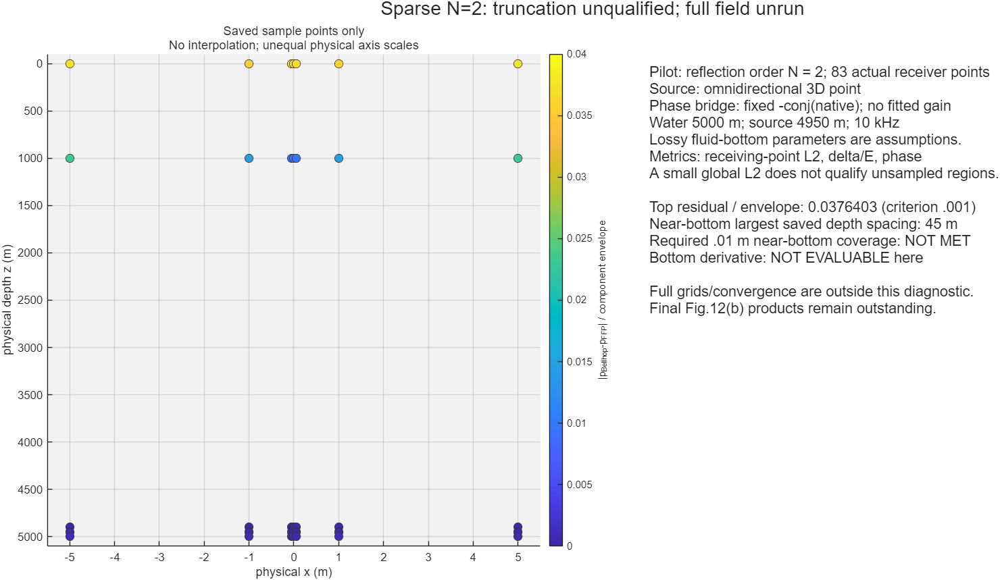
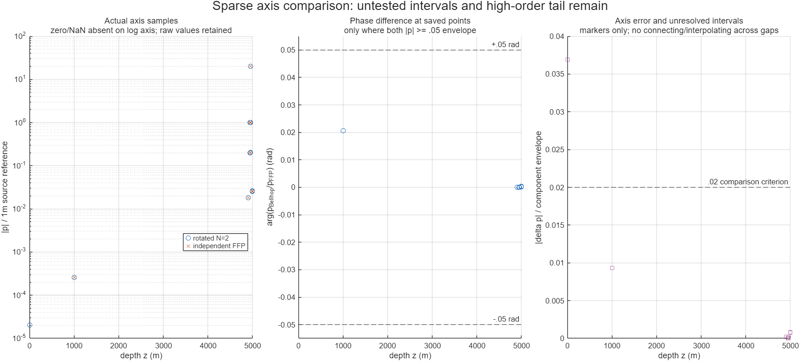

本页为84个接收点的先导。没有生成完整Fig.12(b)，也未取得反射阶数收敛。
5000m水深、源4950m、10kHz；全向三维点源及示例有损流体底是假设。复声压不拟合增益/相位，不插值补点。

色标0到.04仅用于逐点误差，超过色标值仍保存在原始MAT。本页不是相干TL连续场图。

判据为工程诊断：复L2/逐点差除分量包络 .02，相位 .05rad；不是论文容差或物理资格。等权点范数与梯形单元加权采样范数均列出，未采样细条纹不在其覆盖范围。
| 区域 | 点数 | 等权复L2 | 单元加权复差 | 最大差/E | 有效点最大相位(rad) | 所测数值达门(0/1) |
|---|---|---|---|---|---|---|
| all | 83 | 8.8389e-06 | 0.000157059 | 0.0376403 | 0.0507199 | 0 |
| bulk_z0_4900 | 21 | 0.0012789 | 0.000915805 | 0.0376403 | 0.0507199 | 0 |
| near_bottom_r_ge1 | 61 | 8.35807e-05 | 0.000228264 | 0.000867974 | 0.000497509 | 1 |
| axis_r_ge1 | 9 | 3.7582e-05 | 0.000216988 | 0.0369324 | 0.0205706 | 0 |
| source_vicinity_r_lt1 | 8 | 5.82543e-06 | 7.12224e-06 | 9.51635e-06 | 8.73038e-06 | 1 |
源奇点保留NaN；相位只在两方法幅度均达到.05E时显示；零压对数不显示。底部完整DtN闭合不能由有限±5m孔径独立恢复；稀疏点不够计算底部导数。
未裁剪复场及配置MAT · 分区CSV · 图1可编辑FIG · 图2可编辑FIG
本页保留稀疏先导数据；完整网格及最终图件尚未执行，预算状态以当前授权回执为准。本页不替代最终交付。